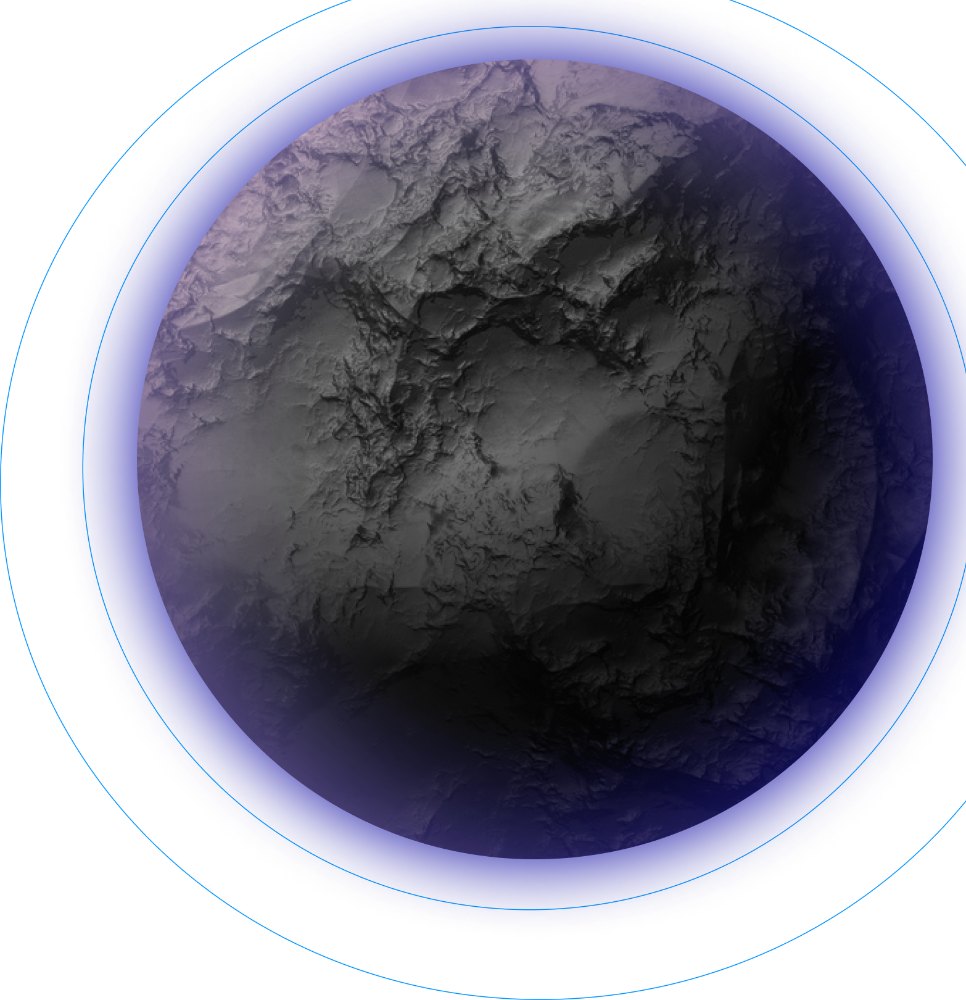

Mejoras de la Generación Procedural
- Mejor coherencia entre los elementos generados
- Mejor adaptabilidad a las decisiones del jugador
- Mejor capacidad de generación de entornos masivos
No Man's Sky utiliza generación procedural para crear un universo masivo
